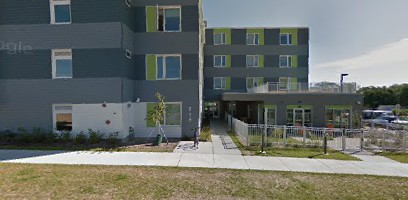

It seems difficult to avoid reading about yet another “affordable housing” project being located somewhere in Madison, perhaps the latest being at the the old Messner site 1326 East Washington on the near east side, and others being at 7933 and 7941 Tree Lane on the far west side.
“Affordable housing” is another one of those common terms that has been taken over by technocrats to have a very specific meaning in some circles. Generally, the term simply means that the cost of your housing is within your means, perhaps because its good roof and insulation help keep energy bills low or you do not have to pay for a parking stall that you do not use. The Countys Housing Initiatives website provides good examples ranging from single to multi-family housing.
But others would distinguish between “workforce housing” appropriate for households that earn between 60 and 120 percent of an area’s median income and “affordable housing” aimed at households whose income is less than 60 percent of the median. Not just that however, because both Madison and Dane County also follow the federal guideline that a household is “cost burdened” and in need of affordable housing if it pays more than 30 percent of its monthly income for housing; “extremely cost-burdened” if it pays more than 50 percent of its monthly income for housing. Excluding students, there may be eight to ten thousand households in the city itself that spend more than half their income on rent and are on the verge of homelessness, according to Matthew Wachter, the City of Madisons Housing Initiatives Specialist.
Concern over homelessness prompted the City of Madison in 2014 to allocate $20 million over five years to help build 1,000 new units of special low-income housing. At the same time however, it budgeted over $24 million (using TIF or tax increment financing money) to help developers build parking downtown, much of it to give away during the day.
After years of various iterations, the final plan for a downtown Judge Doyle Square appears to be that the city will provide “free” parking to employers during the day. Many of the employees will be suburbanites who will drive into Madison in the morning from fairly homogenous, low density, sprawling neighborhoods, work in offices during the day, and then return home in the evening to buttress the economy outside Madison. Many of them are, in turn, part of the missing middle class who can no longer afford to live, spend money or help pay taxes in the City of Madison.
The Messner project will be part of the Dane Countys housing program called Housing Initiative, a public-private partnership of elected officials, financial institutions, housing developers and nonprofit housing agencies designed to help people find affordable housing. The county both budgets funds for one or another program, as with its $2,250,000 for a 2016 Affordable Housing Fund, and manages funds from other sources including the State and Federal governments.
The Tree Lane project is part of the City of Madison’s Housing Authority program within its Community Development
office, a different but related entity from that of the County. It too manages State and Federal as well as city funds.
Since most of the even urbanized areas of Dane County do not have any public transportation however, the county’s Housing Initiative does not additionally take transportation access or cost into account when assessing what is “affordable housing” or not. The City’s housing program can and does. It stipulates that a site has to be within two miles of seven day a week 30 minutes bus service and within one mile of a grocery store. That may seem unreasonably lax, as walking one or two miles in the dark and cold is neither safe nor even physically possible for many, including young children or elderly people. But even with such lenient requirements it has found itself ruling out a number of proposed developments, some in actually otherwise rather desirable locations.
Indeed, what the Center for Neighborhood Technology (based in Chicago) has found based on years of research is that the traditional measure of cost burden is inadequate, that it is more realistic to consider housing and transportation costs together. Instead of using 30 percent of household income to identify whether the household is “cost burdened,&$0148; it is better to use a combined figure of 45-48 percent for the cost of both housing and transportation combined. If one uses public transportation instead of an automobile, it is then easily possible to spend more for housing somewhere but still spend less overall. In the Madison Area, is it really less expensive to live in Sun Prairie where rent is lower but one also has to buy a car, or are you better off living in Madison, paying higher rent, but be able to use the bus to get around?
A 2009 study of the Madison Area by the Center for Neighborhood Technology found that Madison and Dane County look fairly affordable when using the conventional housing-only definition of 30 percent of income but that it looked much less affordable when considering the cost of housing and transportation combined. Mapping out census tracts, it found the older, denser and more central parts of Madison that had developed before the autocentric land use of the last decades were the most affordable, including some of the areas now having buildings razed for upscale developments and parking structures. It concluded that affordability could be enhanced with Bus Rapid Transit and Transit Oriented Developments, that investing in public transportation is investing in affordable housing (in the more general sense of the word).
 Madison Area Bus Advocates
Madison Area Bus Advocates